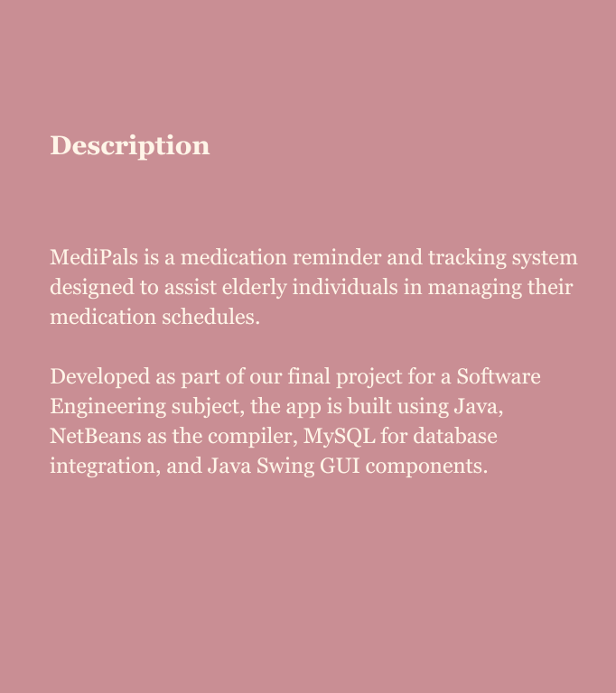
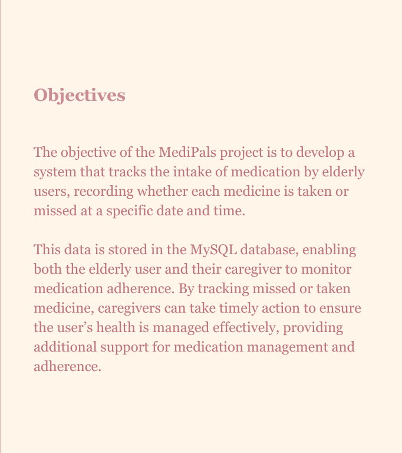
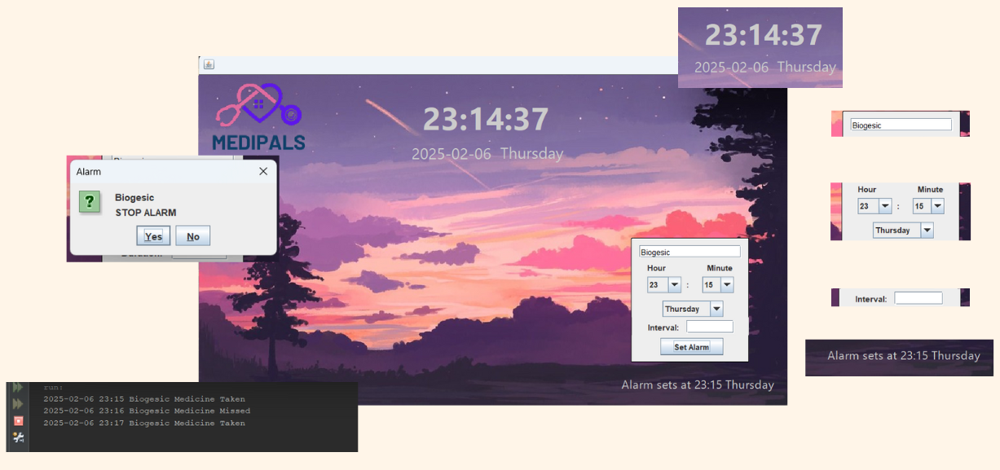

Click on the buttons to see details.

A pop-up is used as a prompt for the alarm, with a button to turn it off. Additionally, a ringtone plays, and the name of the medication to be taken at that specific time is displayed.
After the alarm is either turned off or missed (if not deactivated within one minute), the date and time, medication name, and whether the medication was taken or missed will be automatically recorded in the system database, and the history will be made available to the user.
The system continuously updates and displays the current time and date on the main interface. Enhancing the user experience by making it easy to check the current time directly within the system.
A text field for the user to enter the medicine name they needed to take. This will be stored on the system database and will also be displayed on the alarm notification, reminding the user of what medicine they should take.
The system uses combo boxes to get the input for the hour, minute and day of the week, making it more user-friendly for elderly users.
Instead of manually typing numbers, which can be challenging for those with limited dexterity or vision impairments, users can simply click and select their desired time from a predefined list.
This eliminates the risk of accidental input errors and ensures they set their medication reminders accurately.
MediPals also give users an option to set a recurring alarm, when the medicine is required to be taken in interval (ex. every 8 hours).
Displays upcoming alarm.